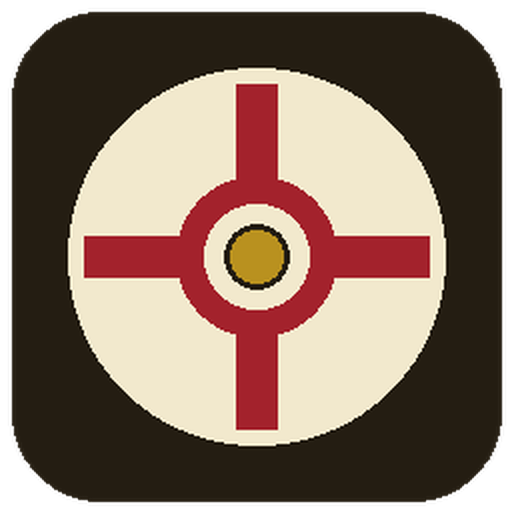
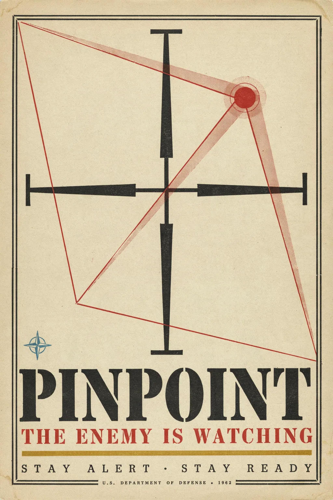
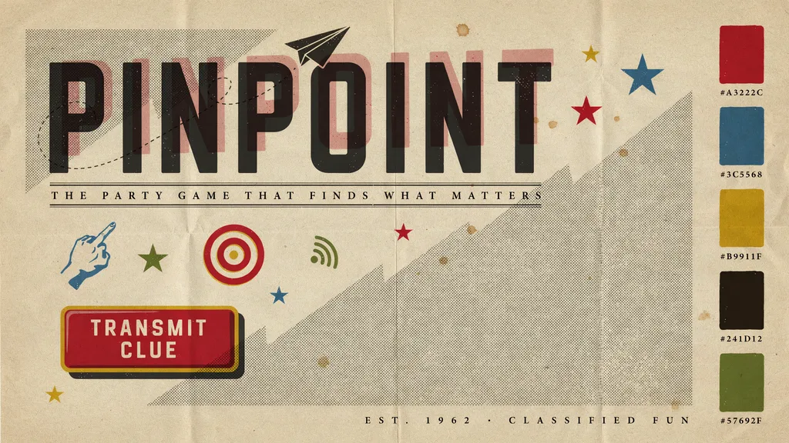

Favicon / app icon
A wax-seal medallion with a red triangulation crosshair, hand-rendered at exact token hex values after an Ideogram concept pass drifted off-palette. See DESIGN.md §8 for why.

Design System Showcase — every token and component below renders live from
packages/client/src/common/styles.css, the app's real stylesheet. Nothing on this
page is a mockup. Full rationale: DESIGN.md.
Every swatch is painted with var(--token) — the label's hex value is read
back from the live computed style, not retyped, so it can never drift from the stylesheet.
Three faces, one role each: display (Kremlin Kommisar → Oswald → Impact) for anything stamped or shouted, body (Domine) for reading copy, data (Space Mono) for codes, timers, and dossier metadata.
4px base scale used for gaps and padding throughout .stack, .row,
.card, and form controls.
A hard-edged "stamped paper" shadow, not a soft UI drop-shadow — no blur, offset only.
Buttons swap to the pressed variant on :active.
Click/hover each box — it plays the named transition for real.
Hand-drawn dossier pictograms, one per message category, rendered from the same inline
SVG markup as CategoryIcon in ui.tsx.
Same tokens, scaled with vw/vh units for a room-distance
readable surface — never a separate look.
The recruitment poster used on the landing screen, and the mood board that anchored this pass. See DESIGN.md → "Mood board directions" for the two runner-up boards and why this one won.


A wax-seal medallion with a red triangulation crosshair, hand-rendered at exact token hex values after an Ideogram concept pass drifted off-palette. See DESIGN.md §8 for why.
